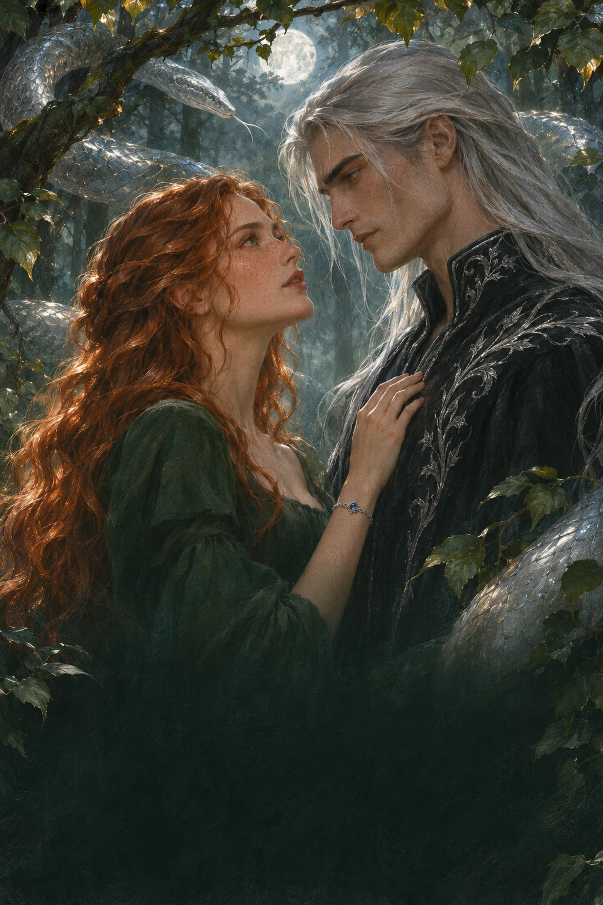

AYIN UNUTTUĞU KRAL
Sağa dokun veya kaydır: ileri · Sola dokun: geri · Ortaya dokun: menü
Ayın Unuttuğu Kral açılıyor

Kitabı açmak için dokunI. KİTAP · KIRIK YEMİNİN MİRASI
Kurtadam Fantastiği · Gizem · Aşk ve İhanet
Kurdunu verdi. Yemini kırıldı.
Ay, unuttuğu ismi geri çağırdı.
Dijital okuma edisyonu
AYIN UNUTTUĞU KRAL
Sağa dokun veya kaydır: ileri · Sola dokun: geri · Ortaya dokun: menü